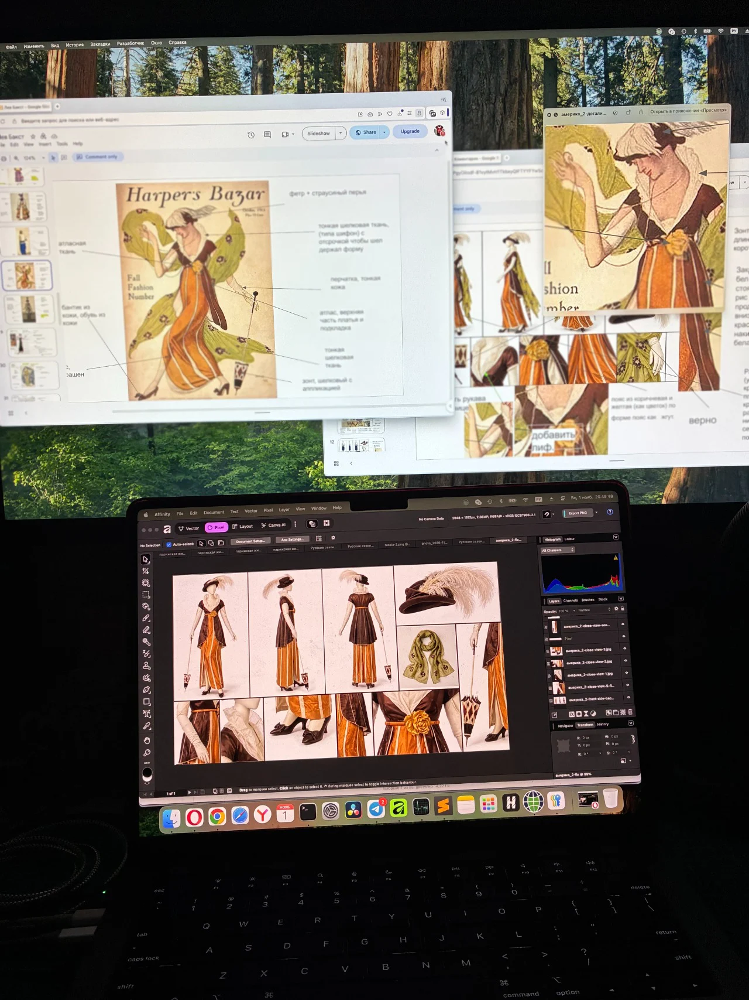
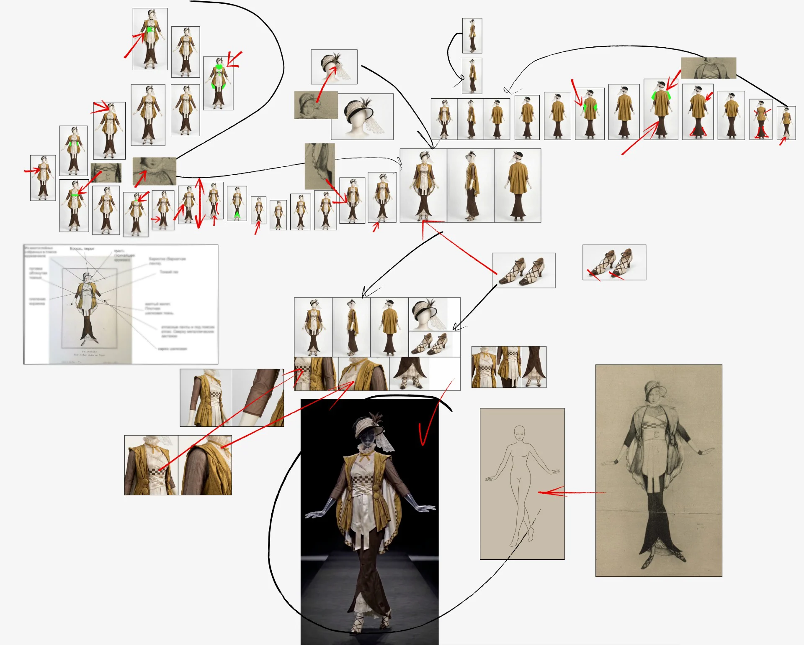
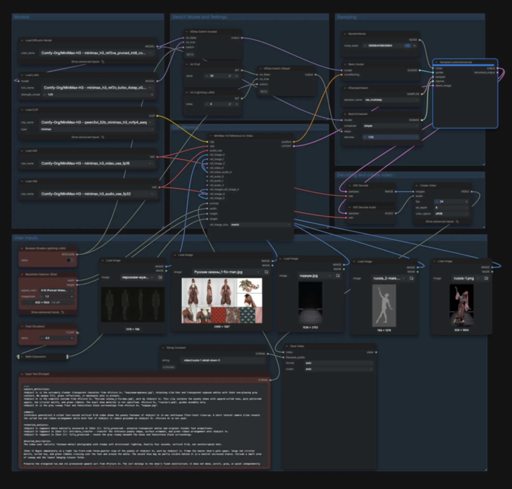

A Fashion Show in Costumes by Léon Bakst · «Дефиле в костюмах Льва Бакста»
Tretyakov Gallery · 2026
Costume visualisation and animation based on Léon Bakst’s sketches. Art direction, script and editing.
For the Léon Bakst exhibition at the Tretyakov Gallery, I created a ten-minute video fashion show: twenty costumes from the artist’s sketches became realistic garments in motion. The exhibition marks the 160th anniversary of Bakst’s birth.
I was responsible for costume visualisation and animation, art direction, the script and editing. The music was composed by Dima Nevolnik.
The work combines a runway presentation with theatrical and ballet poses. Bakst worked in theatre, and I wanted to preserve that connection: the characters’ movements draw on historical photographs of performers wearing his costumes.
From Sketch to Costume
I developed the costumes with curators who had studied Bakst and his work in depth. Every detail mattered: three layers of fine silk, a satin ribbon, the way a scarf was wrapped, and the buttons fastening a cape.
If a hat has three fabric-covered buttons, it must have three fabric-covered buttons. No rhinestones, even if they look prettier.
During the project, I also learned a new vocabulary of details: a chemisette, a cameo ornament, and black scalloped trim sewn to a dress.

I first assembled an approximate front, side and back view of each outfit. Then I refined the details: correcting a shape, making fine silk transparent, or replacing feathers on a headdress. I transferred successful elements through masks in an image editor, then regenerated individual parts. Piece by piece, step by step.
I used Qwen Image, Nano Banana and extensive manual work. A single costume took anywhere from five hours to two days. The curators and I refined the details until the result matched the sketch.

Movement and Visual Direction
For animation, I used MiniMax in ComfyUI. I planned scenes second by second, gathered references and wrote detailed prompts, sometimes as long as ten thousand characters. ChatGPT helped format them for the model; I then checked and refined every scene manually.
For the final ten-minute film, I generated around five hundred videos. I selected movements from them and assembled a sequence of runway appearances for twenty outfits.

The Tretyakov Gallery entrusted me with the script and overall visual direction. I developed the characters, lighting, movement and action within each shot so that every appearance expressed the character of its costume.
Music
I entrusted the music to my dear friend Dima Nevolnik. As in our work for Suzdal, he found music in these silent movements, combining fashion beats with an orchestral sound. Just as we like it. Dima worked closely with feedback, and together with the curators we brought the score to its final form.
This is the only installation in the exhibition with sound. In the edit, the music and the characters’ movements came together as a single fashion show.
Video
Thank you to the Tretyakov Gallery, the curators and Natalia Goryunova for their trust!